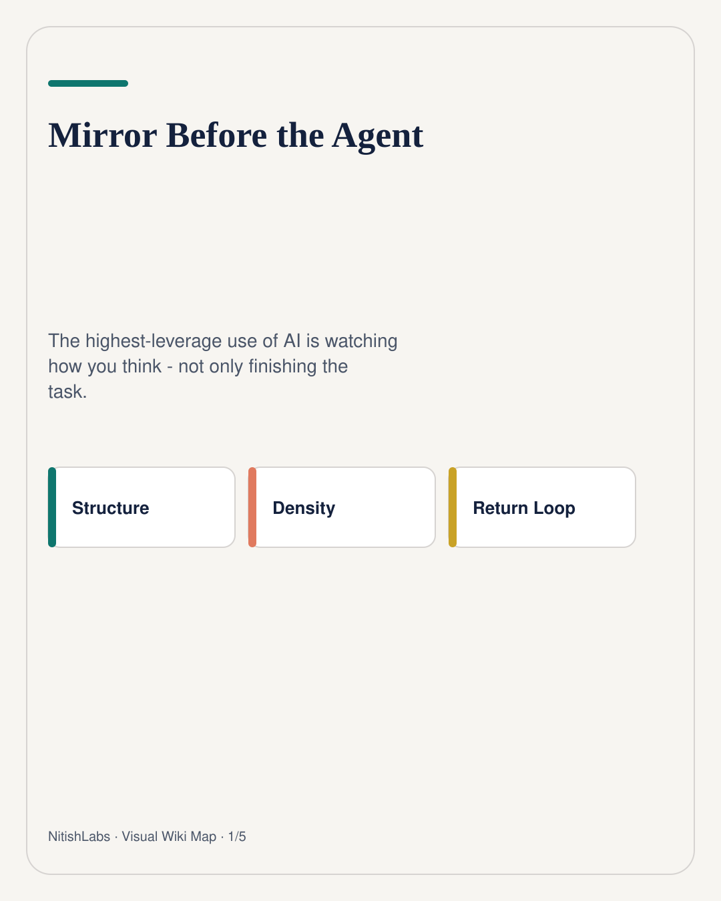
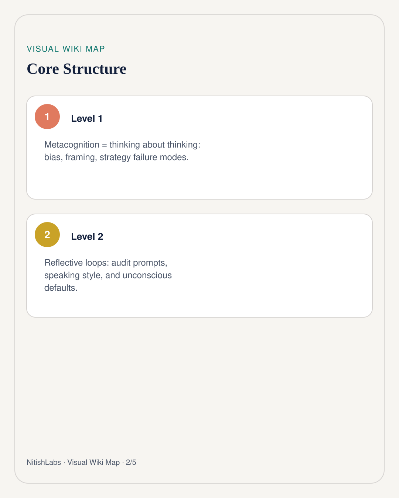
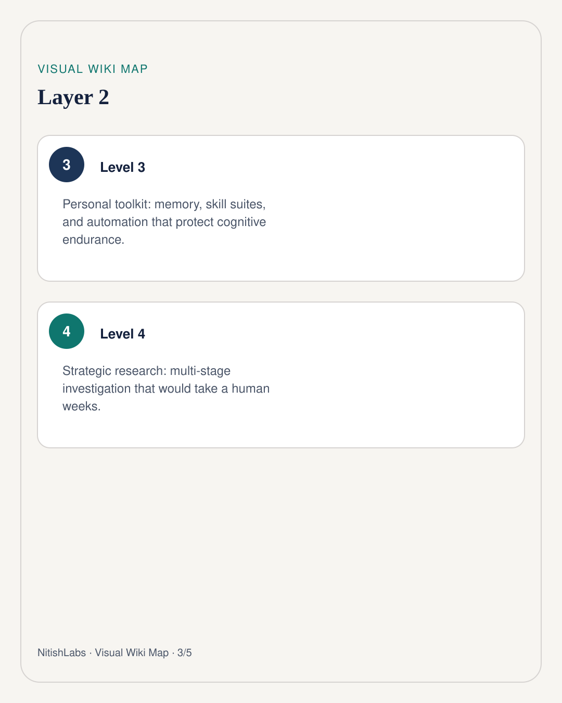
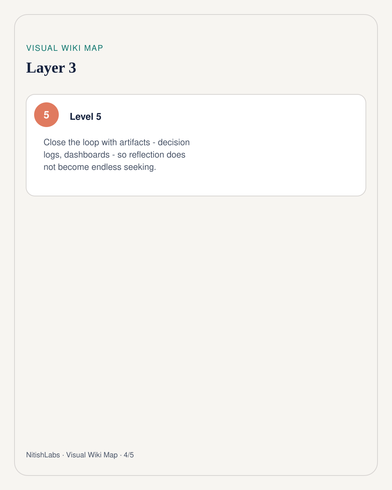
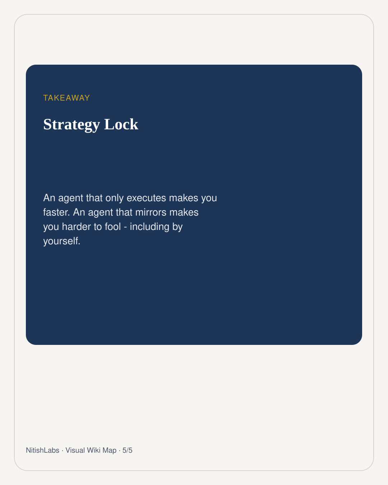

Mirror Before the Agent
An agent that only executes makes you faster. An agent that mirrors makes you harder to fool - including by yourself.
Visual Wiki Map
Compressed schema carousel · swipe





Metacognition sounds academic until you notice what actually breaks in human-AI work: not the model’s IQ, but the human’s invisible defaults. How you frame the problem. What you leave out. Which speaking habits dominate when you are unconscious. Nitish Chauhan treats that as a feature of the era - a fantastic process for developing the mirror.
Three pillars, one loop
- Metacognition: reflective agents that audit prompts, strategies, and confidence gaps.
- Personal toolkit: memory, skill suites, and automation that preserve cognitive endurance for high-stakes judgment.
- Strategic research: multi-agent investigation that surfaces patterns a solo scroll would never reach.
Do the work → mirror how the work was framed → export an artifact (log, dashboard, brief) → get a return signal → adjust the kitchen
Escape the endless seeking loop
Self-reflection without artifacts becomes a recursive hobby. Convert the mirror into projects: a decision log after sessions, a bias-aware prompt library, a feed that flags when your assumptions clash with public pushback. The point is not infinite introspection. The point is a closed loop where thinking about thinking produces something shareable.
Prompt yourself: what errors should I watch for when using this tool - and what does my unconscious style keep smuggling into every request?
Mirror first. Then let the agent run. Otherwise you just accelerate the wrong loop with better GPUs.